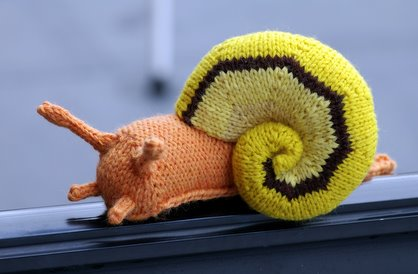
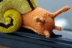
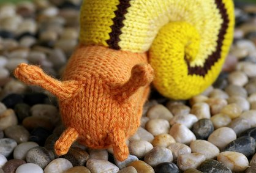

|
||
Premium Patterns Wintry Mix Mitts Love Bytes HawkeyeFree Patterns Kiddie Cadet Summerlin Ruffled Scarf Seamless DS Sock Simply Seamless Pouch Myriads of MushroomsExtras DIY Mitten Blocker Felt Patch Tutorial Yarn Dyeing Tutorial Needle Pouches Knitting Journal |
February 27, 2008 - Posted by Grace SchneblyGastropod Pictures Presents... Project Specs This is the latest Hansigurumi toy, and I know I say this every time, but how does she come up with these things?! I love this guy (I know I also say this every time I knit up one of her designs), and will surely be knitting several more in the future! I just can’t get over how creative Hansi is, and yet again this design is a stroke of genius. The snail is knit in two parts – the shell and the mantle. The construction of both pieces are surprisingly simple. I think that any knitter who is familiar with increases, picking up stitches, and Kitchener stitch would be able to create one without a problem. Some seaming is required to attach the two pieces at the end, but the seam is hidden under the edge of the shell so it doesn’t have to be immaculate. I did have a little bit of a tough time wrangling my dpns while knitting some parts of this guy, but I blame it on the fact that I was using a set of four 5” needles (it used to be a set of 5, but I lost one). 7” DPNs would have been a lot easier to control, and it would have probably been even better to use two circular needles. I am going to be investing in some better needles soon! Before I knit my snail, I sifted through some real life snail pictures for inspiration. Snails come in a lot of great color combinations, so you can knit a realistic looking snail without just using brown and gray. I chose which colors to use based on this photo that I found on Flickr of a yellow and brown snail shell. Wouldn’t it be cool to make a snail inspired by this photo? Or how about a snail that is colored like Gary from Sponge Bob? There are so many possibilities so don’t be afraid to be creative when making your own! I love how this is such an oddball knit. It is fun, wacky, whimsical, and yet realistic at the same time! I mean a knit gastropod… who would have thunk it! Not only does this pattern make a great snail, but leave off the shell and you’ve got a perfect slug. I’ve already decided to knit a slug for my niece’s first birthday coming up in April. Of all the previous Hansigurumi toys that I’ve knit, I never really thought that they would be suitable for babies. However the snail really seems to be kid/baby friendly. I know that I would have loved to have a toy slug to play with as a kid, but that is probably just a side effect of watching too much TV. I think that I will be knitting up a few slugs for myself as well. I’m feeling the urge to create a giant gastropod army to do my bidding… In my opinion a knit slug is better than the real thing, you get all the fun without the slime!  |
   Recent ReviewsRecent Posts
 Our Favorites
|
| © 2007 KathrynIvy.com | ||
{kind=link}
{kind=link}